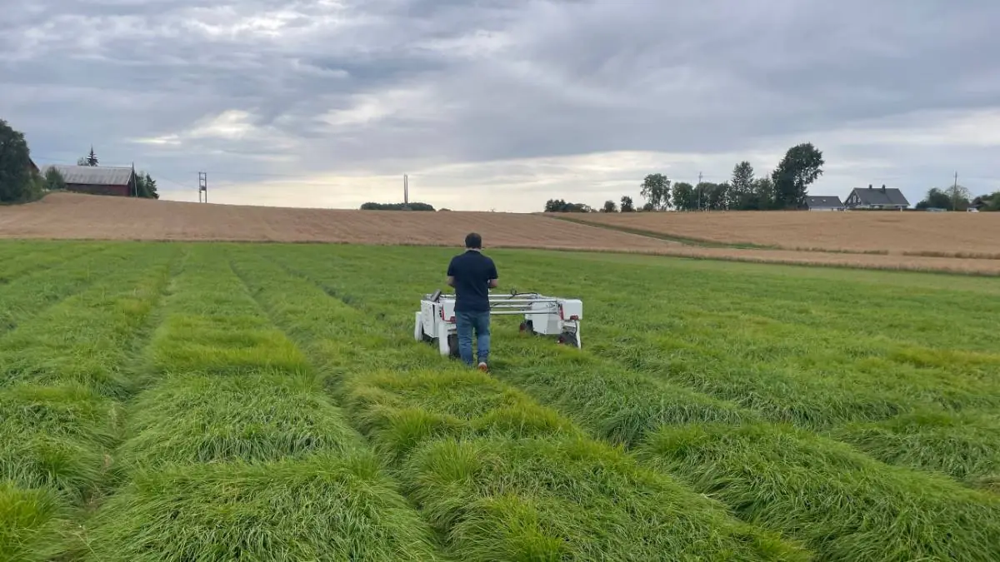

Nitrogenutnytting i flerårig raigras
I Ås og Hamar sammenligner vi grasavling ved tre nivåer av nitrogengjødsling. Deretter dyrker vi utvalgte raigrassorter i næringsløsning og bruker sekvensering av enkeltkjerner for å finne rotcellene som uttrykker gener for nitrattransport.
Vi undersøker hvilke sorter som gir mer avling ved samme gjødslingsnivå, og hvilke som holder avlingen oppe når vi gjødsler mindre.
Åpne rotatlaset for raigras
40sorter
3nitrogennivåer
2forsøkssteder